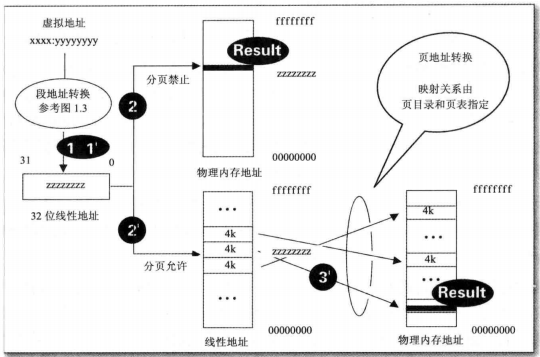

写在前面
内存机制也是一个算是比较早就接触的东西了。就我个人认为，对内存机制的理解应是对理解整个系统的一个很重要的基石，同时对于动态调试也有很大的帮助。在这段时间我总算是对这个有一个比较详细的了解。故写一篇博文，将其记录下来。
一些基础概念
实模式与保护模式
我们都知道，在8086下，我们可以直接控制实际地址的数值，看起来贼方便，但这会带来非常多的安全问题。所以保护模式应运而生。通过对内存的段页式管理，提高了安全性。
虚拟地址
我们时常会讨论所谓虚拟地址(线性地址)。顾名思义，虚拟地址就是"虚假的地址"。我们知道，在x86下，每个进程都会认为自己有0x0 - 0xffffffff的一段空间。但我们开动我们的猪猪脑袋一想就知道，在现在这是不可能的。这时，进程所认为自己拥有的这块内存的某一个地址就称之为虚拟地址。
逻辑地址
逻辑地址这个概念，我相信接触过汇编语言都不会陌生。在8086汇编中，逻辑地址是这样表示的:xx:yyyy 通过段选择器 * 16 + 偏移地址这就达到了虚拟地址。这也体现了一种分段的思想。但是linux皮啊，觉得你这个分段思想很菜，但是这是intel标准咋办？**把段选择器变成0不就好了吗！**那么在linux下，我们就可以近似的认为，逻辑地址==虚拟地址(尽管二者概念并不一样 且linux下还是有段属性的)但在windows下还是严格遵守的。具体的转化规则后面提。
物理地址
所谓物理地址，就是内存真正的地址啦！
具体的转化过程
逻辑地址 -> 虚拟地址
前文提到，在8086下，逻辑地址 -> 线性地址就是一个偏移的事情。但是在x86下，这个事情就变得没这么简单了。就是前文提到的"段页式管理"。先从段的角度出发。作为一个段，它有着这么几个特性:段基址，段限长和段属性。这边只做简单了解。段基址，顾名思义，这个段的基地址。段限长就决定了这个段的上限/下限，而段属性则是如rwe这样的。包括这些特性的一个东西我们就称之为段描述符。这里放一个具体的分布情况

具体里面的这些东西是啥，我也不大清楚。这里贴上一篇文章(我个人认为写的非常的好，很翔实。有兴趣再进一步了解的可以看看这篇文章)
总而言之，通过这个图片我们就可以清楚地了解了:假如我们要描述一个段，我们需要64位。但cs,ds这些只有16位呀，这可咋办？很简单，将这些段描述符都在一个地方用数组的形式存起来形成一个表单，然后cs/ds/…作为索引，不就可以完成这样的操作了吗？
在操作系统下有两个这样的表单:GDT和LDT。GDT是全局描述符表，其可以作用在整个系统中，而LDT是局部描述符表，一个线程就可以对应一个LDT。那么又一个问题来了:我们如何找到这个段描述符表的地址呢？这时候就要了解两个寄存器了:GDTR和LDTR。GDTR里面存放了GDT的基址，通过它，CPU就可以快速的找到GDT的地址，而LDTR里面存放的是某个线程的LDT"基址"。这里需要注意的是LDT其实是包括在GDT里面的，相当于LDTR里面存放的其实是GDT的偏移。具体的我们后面再说。
想要了解这个转化过程，我们还需要知道一个东西，就是段选择子，也就是以前我们所谓的段寄存器，它是长啥样的

可以看见，前面是描述符的索引，中间有一个TI位，若TI为为0，说明这个地址处于GDT下，若为1则是在LDT下。最后的RPL是这个程序的特权级。
好了，有了这些知识后，我们就可以开始说明转化过程了。首先我们拿到了一个逻辑地址:xx:yyyyyyyy,这时候就要先看xx的TI位是0还是1。如果是0的话，说明这个段是在全局描述符表里的，所以我们就可以直接将xx作为index，通过GDTR里面保存的GDT的基址，在GDT中拿出那个段描述符，再通过这个段描述符里保存的基址，加上后面yyyyyyyy的偏移，最终得到一段虚拟地址。
如果是1的话过程会稍微复杂一点。1则说明这个段描述符在LDT中。那么在这里首先还是通过GDTR获得GDT的基址，然后用LDTR作为偏移，获得这个LDT的地址，再通过xx找到段描述符，最后再将基址取出，加上偏移得到虚拟地址。
虚拟地址 -> 物理地址
假如没有分页机制的话，到这一步其实已经结束了。但是很残酷的是分页机制是有的。那么这时候，我们还得做一次转换。
那么首先，什么是分页呢？分页就是将物理地址以4k的大小分成很多个段，再通过一些管理机制就叫做分页机制。但是我们明明已经有了分段机制了啊，非常安全呀！为啥还需要分页机制？这时候你就得从内存的角度上想问题了。如果都按分段机制来，内存被硬性分成一个一个段，段这个东西对于内存来说还是太大了，就很容易造成留下一些缝隙没法被使用，也就是我们说的内存碎片的问题。辣么为了解决这个问题，分页机制就诞生啦。我以4k作为一个单位，映射到你所需要的虚拟地址上，既节省内存也能解决内存碎片的问题。还非常的灵活！那问题又来啦，如何管理这些页呢？
一个很直接的想法是，用类似于数组的方法，每个单元都存放一个页的地址不就好了？但如果这样，其占用的空间就是4mb。总而言之过去不能接受！太大了！
那有没有更好的办法呢？
通过各种索引。将32位的地址分成10 + 10 + 12。这样我们就将2^32的大小减少成了2^10 + 2^10 + 2^12。而前面的两个东西我们就称之为页目录和页表(注意:不是所有操作系统都是只用三个索引来找到页的，分的更过分的有许多)
其实到了这一步，整个转化的流程就基本出来了。最后再介绍一个寄存器:CR3。CR3保存了某个线程的页目录地址，我们之前获得的32位虚拟地址被分割成三个段:10 + 10 + 12。前十位作为在页目录的索引，获得页表的地址，中间十位为在页表中的索引，最后的12位则可以直接表示在一个页中的任意地址了。可以看下图帮助理解:

这样整个地址转化的过程就结束啦！
一些没啥用的添加
我们可以想这样一个问题:CPU一个时间片结束后切换进程，其所对应的虚拟地址也会改变，这时候该怎么变化？
通过刚才说的，我相信你应该能想出来。只要将CR3寄存器和LDTR寄存器的值更改，就可以成功的切换进程了。所以其实所谓的"映射"，就是一个分页的逆推而已。希望这篇文章能对你有所帮助。